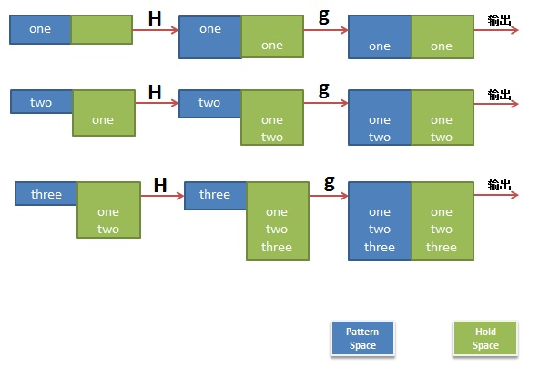

sed 简明教程
 awk于1977年出生，今年36岁本命年，sed比awk大2-3岁，awk就像林妹妹，sed就是宝玉哥哥了。所以 林妹妹跳了个Topless，他的哥哥sed坐不住了，也一定要出来抖一抖。
awk于1977年出生，今年36岁本命年，sed比awk大2-3岁，awk就像林妹妹，sed就是宝玉哥哥了。所以 林妹妹跳了个Topless，他的哥哥sed坐不住了，也一定要出来抖一抖。
sed全名叫stream editor，流编辑器，用程序的方式来编辑文本，相当的hacker啊。sed基本上就是玩正则模式匹配，所以，玩sed的人，正则表达式一般都比较强。
同样，本篇文章不会说sed的全部东西，你可以参看sed的手册，我这里主要还是想和大家竞争一下那些从手机指缝间或马桶里流走的时间，用这些时间来学习一些东西。当然，接下来的还是要靠大家自己双手。
用s命令替换
我使用下面的这段文本做演示：
$ cat pets.txt
This is my cat
my cat's name is betty
This is my dog
my dog's name is frank
This is my fish
my fish's name is george
This is my goat
my goat's name is adam
把其中的my字符串替换成Hao Chen’s，下面的语句应该很好理解（s表示替换命令，/my/表示匹配my，/Hao Chen’s/表示把匹配替换成Hao Chen’s，/g 表示一行上的替换所有的匹配）：
$ sed "s/my/Hao Chen's/g" pets.txt
This is Hao Chen's cat
Hao Chen's cat's name is betty
This is Hao Chen's dog
Hao Chen's dog's name is frank
This is Hao Chen's fish
Hao Chen's fish's name is george
This is Hao Chen's goat
Hao Chen's goat's name is adam
注意：如果你要使用单引号，那么你没办法通过\’这样来转义，就有双引号就可以了，在双引号内可以用\”来转义。
再注意：上面的sed并没有对文件的内容改变，只是把处理过后的内容输出，如果你要写回文件，你可以使用重定向，如：
$ sed "s/my/Hao Chen's/g" pets.txt > hao_pets.txt
或使用 -i 参数直接修改文件内容：
$ sed -i "s/my/Hao Chen's/g" pets.txt
在每一行最前面加点东西：
$ sed 's/^/#/g' pets.txt
#This is my cat
# my cat's name is betty
#This is my dog
# my dog's name is frank
#This is my fish
# my fish's name is george
#This is my goat
# my goat's name is adam
在每一行最后面加点东西：
$ sed 's/$/ --- /g' pets.txt
This is my cat ---
my cat's name is betty ---
This is my dog ---
my dog's name is frank ---
This is my fish ---
my fish's name is george ---
This is my goat ---
my goat's name is adam ---
顺手介绍一下正则表达式的一些最基本的东西：
- ^ 表示一行的开头。如：/^#/ 以#开头的匹配。
- $ 表示一行的结尾。如：/}$/ 以}结尾的匹配。
- \< 表示词首。 如 \<abc 表示以 abc 为首的詞。
- \> 表示词尾。 如 abc\> 表示以 abc 結尾的詞。
- . 表示任何单个字符。
- * 表示某个字符出现了0次或多次。
- [ ] 字符集合。 如：[abc]表示匹配a或b或c，还有[a-zA-Z]表示匹配所有的26个字符。如果其中有^表示反，如[^a]表示非a的字符
正规则表达式是一些很牛的事，比如我们要去掉某html中的tags：
<b>This</b> is what <span style="text-decoration: underline;">I</span> meant. Understand?
看看我们的sed命令
# 如果你这样搞的话，就会有问题
$ sed 's/<.*>//g' html.txt
Understand?
# 要解决上面的那个问题，就得像下面这样。
# 其中的'[^>]' 指定了除了>的字符重复0次或多次。
$ sed 's/<[^>]*>//g' html.txt
This is what I meant. Understand?
我们再来看看指定需要替换的内容：
$ sed "3s/my/your/g" pets.txt
This is my cat
my cat's name is betty
This is your dog
my dog's name is frank
This is my fish
my fish's name is george
This is my goat
my goat's name is adam
下面的命令只替换第3到第6行的文本。
$ sed "3,6s/my/your/g" pets.txt
This is my cat
my cat's name is betty
This is your dog
your dog's name is frank
This is your fish
your fish's name is george
This is my goat
my goat's name is adam
$ cat my.txt
This is my cat, my cat's name is betty
This is my dog, my dog's name is frank
This is my fish, my fish's name is george
This is my goat, my goat's name is adam
只替换每一行的第一个s：
$ sed 's/s/S/1' my.txt
ThiS is my cat, my cat's name is betty
ThiS is my dog, my dog's name is frank
ThiS is my fish, my fish's name is george
ThiS is my goat, my goat's name is adam
只替换每一行的第二个s：
$ sed 's/s/S/2' my.txt
This iS my cat, my cat's name is betty
This iS my dog, my dog's name is frank
This iS my fish, my fish's name is george
This iS my goat, my goat's name is adam
只替换第一行的第3个以后的s：
$ sed 's/s/S/3g' my.txt
This is my cat, my cat'S name iS betty
This is my dog, my dog'S name iS frank
This is my fiSh, my fiSh'S name iS george
This is my goat, my goat'S name iS adam
多个匹配
如果我们需要一次替换多个模式，可参看下面的示例：（第一个模式把第一行到第三行的my替换成your，第二个则把第3行以后的This替换成了That）
$ sed '1,3s/my/your/g; 3,$s/This/That/g' my.txt
This is your cat, your cat's name is betty
This is your dog, your dog's name is frank
That is your fish, your fish's name is george
That is my goat, my goat's name is adam
上面的命令等价于：（注：下面使用的是sed的-e命令行参数）
sed -e '1,3s/my/your/g' -e '3,$s/This/That/g' my.txt
我们可以使用&来当做被匹配的变量，然后可以在基本左右加点东西。如下所示：
$ sed 's/my/[&]/g' my.txt
This is [my] cat, [my] cat's name is betty
This is [my] dog, [my] dog's name is frank
This is [my] fish, [my] fish's name is george
This is [my] goat, [my] goat's name is adam
圆括号匹配
使用圆括号匹配的示例：（圆括号括起来的正则表达式所匹配的字符串会可以当成变量来使用，sed中使用的是\1,\2…）
$ sed 's/This is my \([^,]*\),.*is \(.*\)/\1:\2/g' my.txt
cat:betty
dog:frank
fish:george
goat:adam
上面这个例子中的正则表达式有点复杂，解开如下（去掉转义字符）：
正则为：This is my ([^,]*),.*is (.*)
匹配为：This is my (cat),……….is (betty)
然后：\1就是cat，\2就是betty
sed的命令
让我们回到最一开始的例子pets.txt，让我们来看几个命令：
N命令
先来看N命令 —— 把下一行的内容纳入当成缓冲区做匹配。
下面的的示例会把原文本中的偶数行纳入奇数行匹配，而s只匹配并替换一次，所以，就成了下面的结果：
$ sed 'N;s/my/your/' pets.txt
This is your cat
my cat's name is betty
This is your dog
my dog's name is frank
This is your fish
my fish's name is george
This is your goat
my goat's name is adam
也就是说，原来的文件成了：
This is my cat\n my cat's name is betty
This is my dog\n my dog's name is frank
This is my fish\n my fish's name is george
This is my goat\n my goat's name is adam
这样一来，下面的例子你就明白了，
$ sed 'N;s/\n/,/' pets.txt
This is my cat, my cat's name is betty
This is my dog, my dog's name is frank
This is my fish, my fish's name is george
This is my goat, my goat's name is adam
a命令和i命令
a命令就是append， i命令就是insert，它们是用来添加行的。如：
# 其中的1i表明，其要在第1行前插入一行（insert）
$ sed "1 i This is my monkey, my monkey's name is wukong" my.txt
This is my monkey, my monkey's name is wukong
This is my cat, my cat's name is betty
This is my dog, my dog's name is frank
This is my fish, my fish's name is george
This is my goat, my goat's name is adam
# 其中的1a表明，其要在最后一行后追加一行（append）
$ sed "$ a This is my monkey, my monkey's name is wukong" my.txt
This is my cat, my cat's name is betty
This is my monkey, my monkey's name is wukong
This is my dog, my dog's name is frank
This is my fish, my fish's name is george
This is my goat, my goat's name is adam
我们可以运用匹配来添加文本：
# 注意其中的/fish/a，这意思是匹配到/fish/后就追加一行
$ sed "/fish/a This is my monkey, my monkey's name is wukong" my.txt
This is my cat, my cat's name is betty
This is my dog, my dog's name is frank
This is my fish, my fish's name is george
This is my monkey, my monkey's name is wukong
This is my goat, my goat's name is adam
下面这个例子是对每一行都挺插入：
$ sed "/my/a ----" my.txt
This is my cat, my cat's name is betty
----
This is my dog, my dog's name is frank
----
This is my fish, my fish's name is george
----
This is my goat, my goat's name is adam
----
c命令
c 命令是替换匹配行
$ sed "2 c This is my monkey, my monkey's name is wukong" my.txt
This is my cat, my cat's name is betty
This is my monkey, my monkey's name is wukong
This is my fish, my fish's name is george
This is my goat, my goat's name is adam
$ sed "/fish/c This is my monkey, my monkey's name is wukong" my.txt
This is my cat, my cat's name is betty
This is my dog, my dog's name is frank
This is my monkey, my monkey's name is wukong
This is my goat, my goat's name is adam
d命令
删除匹配行
$ sed '/fish/d' my.txt
This is my cat, my cat's name is betty
This is my dog, my dog's name is frank
This is my goat, my goat's name is adam
$ sed '2d' my.txt
This is my cat, my cat's name is betty
This is my fish, my fish's name is george
This is my goat, my goat's name is adam
$ sed '2,$d' my.txt
This is my cat, my cat's name is betty
p命令
打印命令
你可以把这个命令当成grep式的命令
# 匹配fish并输出，可以看到fish的那一行被打了两遍，
# 这是因为sed处理时会把处理的信息输出
$ sed '/fish/p' my.txt
This is my cat, my cat's name is betty
This is my dog, my dog's name is frank
This is my fish, my fish's name is george
This is my fish, my fish's name is george
This is my goat, my goat's name is adam
# 使用n参数就好了
$ sed -n '/fish/p' my.txt
This is my fish, my fish's name is george
# 从一个模式到另一个模式
$ sed -n '/dog/,/fish/p' my.txt
This is my dog, my dog's name is frank
This is my fish, my fish's name is george
#从第一行打印到匹配fish成功的那一行
$ sed -n '1,/fish/p' my.txt
This is my cat, my cat's name is betty
This is my dog, my dog's name is frank
This is my fish, my fish's name is george
几个知识点
好了，下面我们要介绍四个sed的基本知识点：
Pattern Space
第零个是关于-n参数的，大家也许没看懂，没关系，我们来看一下sed处理文本的伪代码，并了解一下Pattern Space的概念：
foreach line in file {
//放入把行Pattern_Space
Pattern_Space <= line;
// 对每个pattern space执行sed命令
Pattern_Space <= EXEC(sed_cmd, Pattern_Space);
// 如果没有指定 -n 则输出处理后的Pattern_Space
if (sed option hasn't "-n") {
print Pattern_Space
}
}
Address
第一个是关于address，几乎上述所有的命令都是这样的（注：其中的!表示匹配成功后是否执行命令）
[address[,address]][!]{cmd}
address可以是一个数字，也可以是一个模式，你可以通过逗号要分隔两个address 表示两个address的区间，参执行命令cmd，伪代码如下：
bool bexec = false
foreach line in file {
if ( match(address1) ){
bexec = true;
}
if ( bexec == true) {
EXEC(sed_cmd);
}
if ( match (address2) ) {
bexec = false;
}
}
关于address可以使用相对位置，如：
# 其中的+3表示后面连续3行
$ sed '/dog/,+3s/^/# /g' pets.txt
This is my cat
my cat's name is betty
# This is my dog
# my dog's name is frank
# This is my fish
# my fish's name is george
This is my goat
my goat's name is adam
命令打包
第二个是cmd可以是多个，它们可以用分号分开，可以用大括号括起来作为嵌套命令。下面是几个例子：
$ cat pets.txt
This is my cat
my cat's name is betty
This is my dog
my dog's name is frank
This is my fish
my fish's name is george
This is my goat
my goat's name is adam
# 对3行到第6行，执行命令/This/d
$ sed '3,6 {/This/d}' pets.txt
This is my cat
my cat's name is betty
my dog's name is frank
my fish's name is george
This is my goat
my goat's name is adam
# 对3行到第6行，匹配/This/成功后，再匹配/fish/，成功后执行d命令
$ sed '3,6 {/This/{/fish/d}}' pets.txt
This is my cat
my cat's name is betty
This is my dog
my dog's name is frank
my fish's name is george
This is my goat
my goat's name is adam
# 从第一行到最后一行，如果匹配到This，则删除之；如果前面有空格，则去除空格
$ sed '1,${/This/d;s/^ *//g}' pets.txt
my cat's name is betty
my dog's name is frank
my fish's name is george
my goat's name is adam
Hold Space
第三个我们再来看一下 Hold Space
接下来，我们需要了解一下Hold Space的概念，我们先来看四个命令：
g： 将hold space中的内容拷贝到pattern space中，原来pattern space里的内容清除
G： 将hold space中的内容append到pattern space\n后
h： 将pattern space中的内容拷贝到hold space中，原来的hold space里的内容被清除
H： 将pattern space中的内容append到hold space\n后
x： 交换pattern space和hold space的内容
这些命令有什么用？我们来看两个示例吧，用到的示例文件是：
$ cat t.txt
one
two
three
第一个示例：
$ sed 'H;g' t.txt
one
one
two
one
two
three
是不是有点没看懂，我作个图你就看懂了。

第二个示例，反序了一个文件的行：
$ sed '1!G;h;$!d' t.txt
three
two
one
其中的 ’1!G;h;$!d’ 可拆解为三个命令
- 1!G —— 只有第一行不执行G命令，将hold space中的内容append回到pattern space
- h —— 第一行都执行h命令，将pattern space中的内容拷贝到hold space中
- $!d —— 除了最后一行不执行d命令，其它行都执行d命令，删除当前行
这个执行序列很难理解，做个图如下大家就明白了：

就先说这么多吧，希望对大家有用。
（全文完）